For the final project we chose the topic "School Management System" from the list of suggested topics. The topic proposes three patterns: Factory to create staff and student profiles, Observer for notifications and Decorator to add roles or permissions. The project must contain at least six patterns, so we added Builder, Strategy and Facade.
The result is SchoolDesk, a console application written in Java 17. With it a school office can register students and teachers, create courses, enroll students in courses, record grades and see the final result of every student in every course. The gradebook can be exported to a CSV file.
The goal of the project was not to build a big system, but to show how several design patterns work inside one program and help each other. That is why we did not use a database, a web framework or external libraries. All data is stored in memory, and the user works with a text menu. This keeps the code small, so every class can be opened and explained during the defense.
The report has the following structure. Section 2 shows how the work was divided between the team members. Section 3 describes what the application does and its rules. Section 4 gives the general architecture. Section 5 explains each of the six patterns with a UML diagram and Java code. Section 6 shows how the patterns are connected. Section 7 contains screenshots of the running program, and section 8 describes testing. The report ends with the conclusion and further work.
The team consists of three students of group SE-2526. Each student implemented two design patterns and the classes around them. The table below shows the distribution.
| Student | Patterns | Classes and other work |
|---|---|---|
| Kuandykov Adilzhan | Factory Method, Decorator | Person, Student, Teacher, Role, PersonCreator, StudentCreator, TeacherCreator, Permission, Access, ReadOnlyAccess, AccessDecorator, RegistrarAccess, GradingAccess, Validation; tests for profiles and access. |
| Yussupov Nurlan | Builder, Strategy | Course with Course.Builder, Enrollment, Assessment, GradingStrategy, WeightedGrading, PassFailGrading, GradeMath, GradeResult; tests for grading, courses and enrollments; UML diagrams. |
| Amangeldi Assylzhan | Observer, Facade | EventBus, SchoolListener, ActivityLog, SchoolEvent, EventType, SchoolFacade, SchoolStore, ConsoleApp, ConsoleInput, CsvExport, DemoData; integration tests, build scripts. |
The source code is kept in one Git repository: https://github.com/Asylstyle/school-management-system.
After start the program loads sample data (two teachers, three students, three courses) and shows the main menu. The menu has the following commands:
| No. | Command | What it does |
|---|---|---|
| 1 | Overview | Shows the number of students, teachers, courses and enrollments. |
| 2 | People | Lists all registered people with their ID and role. |
| 3 | Add person | Registers a new student or teacher. |
| 4 | Courses | Lists courses with the teacher, used seats and grading policy. |
| 5 | Add course | Creates a course with a teacher, capacity and grading policy. |
| 6 | Enroll student | Enrolls a student in a course. |
| 7 | Gradebook | Shows all assessments and the final result for each enrollment. |
| 8 | Record grade | Adds an assessment (title, score, weight) for a student in a course. |
| 9 | Activity | Shows the log of all successful operations with time. |
| 10 | Access mode | Switches between viewer, registrar, grading and admin permissions. |
| 11 | Export CSV | Saves the gradebook to a CSV file. |
| 0 | Exit | Closes the program. |
src/main/java/school/ application classes (33 files) src/test/java/school/ tests (12 files) docs/ report, UML sources, diagrams, screenshots build.ps1 build script for Windows build.sh build script for Linux and macOS .github/workflows/ automatic build and test on GitHub
The project needs only JDK 17 or newer. On Windows the commands are ./build.ps1 -Run to start the program and ./build.ps1 -Test to run the tests. On Linux and macOS the commands are sh build.sh run and sh build.sh test.
The program has three levels. The first level is the console (ConsoleApp, ConsoleInput). It only reads the input and prints the result. The second level is SchoolFacade. It receives all requests from the console, checks permissions and rules, saves data and publishes events. The third level contains the domain classes: people, courses, enrollments, assessments, grading policies, permissions and events.
Figure 1 shows the main classes and the relations between them. All six patterns are visible on this diagram: the creators of people (Factory Method), the access classes (Decorator), Course.Builder (Builder), GradingStrategy with two implementations (Strategy), EventBus with listeners (Observer) and SchoolFacade in the center (Facade).
This section describes each pattern in the same order: the problem, how the pattern solves it in our project, the UML diagram, the code and the place where the pattern is used.
The system works with two kinds of people: students and teachers. More kinds can appear later, for example administrators or parents. If the facade creates objects with new Student(...) and new Teacher(...) directly, the common steps of registration (checking the ID and the name) have to be repeated for every kind.
The abstract class PersonCreator has the method register. It checks the input and then calls the abstract method create. This method is the factory method. The subclasses StudentCreator and TeacherCreator override it and return the concrete object. The code that calls register works only with the type Person and does not know which class was created.
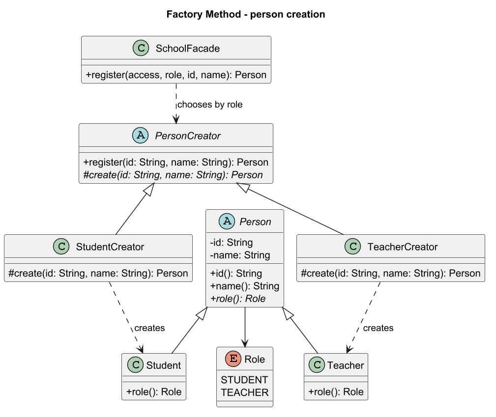
package school;
public abstract class PersonCreator {
public final Person register(String id, String name) {
return create(Validation.text(id, "ID"), Validation.text(name, "Name"));
}
protected abstract Person create(String id, String name);
}package school;
public final class StudentCreator extends PersonCreator {
@Override protected Person create(String id, String name) { return new Student(id, name); }
}package school;
public final class TeacherCreator extends PersonCreator {
@Override protected Person create(String id, String name) { return new Teacher(id, name); }
}package school;
public abstract class Person {
private final String id;
private final String name;
protected Person(String id, String name) {
this.id = Validation.text(id, "ID");
this.name = Validation.text(name, "Name");
}
public final String id() { return id; }
public final String name() { return name; }
public abstract Role role();
@Override public String toString() { return name + " (" + id + ")"; }
}package school;
public final class Student extends Person {
public Student(String id, String name) { super(id, name); }
@Override public Role role() { return Role.STUDENT; }
}The facade chooses a creator by the role and calls register. After that it works with the result as with a Person.
public Person register(Access access, Role role, String id, String name) {
access.require(Permission.MANAGE_PEOPLE);
PersonCreator creator = switch (Objects.requireNonNull(role)) {
case STUDENT -> new StudentCreator(); case TEACHER -> new TeacherCreator();
};
Person person = creator.register(id, name);
if (store.people.containsKey(person.id())) throw new IllegalArgumentException("This person ID already exists");
store.people.put(person.id(), person);
emit(EventType.PERSON_REGISTERED, person.name() + " registered as " + person.role());
return person;
}To add a new kind of person we need a new subclass of Person, a new creator and one more line in the switch. The checks in register stay in one place.
Different users of the system can do different things. A viewer can only read. A registrar adds people and courses and enrolls students. A grading operator records grades. An administrator can do everything. If we make a separate class for every combination, the number of classes grows quickly, and a new permission set needs a new class again.
The interface Access answers the question "is this permission allowed?". The basic object is ReadOnlyAccess, it allows only viewing. AccessDecorator implements the same interface and keeps another Access object inside. RegistrarAccess and GradingAccess extend the decorator. Each of them adds its own permissions and passes all other questions to the wrapped object. Because decorators and the basic object have the same interface, they can be put one into another in any order.

package school;
public interface Access {
boolean allows(Permission permission);
String label();
default void require(Permission permission) {
if (!allows(permission)) throw new SecurityException("Permission required: " + permission);
}
}package school;
public final class ReadOnlyAccess implements Access {
@Override public boolean allows(Permission permission) { return permission == Permission.VIEW; }
@Override public String label() { return "Viewer"; }
}package school;
import java.util.Objects;
public abstract class AccessDecorator implements Access {
protected final Access wrapped;
protected AccessDecorator(Access wrapped) { this.wrapped = Objects.requireNonNull(wrapped); }
@Override public boolean allows(Permission permission) { return wrapped.allows(permission); }
@Override public String label() { return wrapped.label(); }
}package school;
public final class RegistrarAccess extends AccessDecorator {
public RegistrarAccess(Access wrapped) { super(wrapped); }
@Override public boolean allows(Permission p) {
return p == Permission.MANAGE_PEOPLE || p == Permission.MANAGE_COURSES || p == Permission.ENROLL || super.allows(p);
}
@Override public String label() { return wrapped.label() + " + Registrar"; }
}package school;
public final class GradingAccess extends AccessDecorator {
public GradingAccess(Access wrapped) { super(wrapped); }
@Override public boolean allows(Permission p) { return p == Permission.RECORD_GRADES || super.allows(p); }
@Override public String label() { return wrapped.label() + " + Grading"; }
}The administrator is not a separate class. It is a viewer wrapped in two decorators: new GradingAccess(new RegistrarAccess(new ReadOnlyAccess())). The menu command "Access mode" builds the access object for the chosen mode:
private void changeAccess() {
access = switch (input.text("Mode (viewer/registrar/grading/admin)")) {
case "viewer" -> new ReadOnlyAccess();
case "registrar" -> new RegistrarAccess(new ReadOnlyAccess());
case "grading" -> new GradingAccess(new ReadOnlyAccess());
case "admin" -> DemoData.administrator();
default -> throw new IllegalArgumentException("Unknown access mode");
};
}The label of the access object is also built by the decorators. That is why the menu shows "Viewer + Registrar + Grading" for the administrator (see Figure 16).
A course has five fields: code, title, teacher, capacity and grading policy. Two of them have default values. A constructor with five parameters is hard to read, and it is easy to mix up the order of the string parameters. Also the course should not change after it is created, so setters are not suitable.
Course has a private constructor and a nested class Course.Builder. The required values (code and title) are given to the method Course.builder. The other values are set with the methods teacher, capacity and grading. Each of them returns the builder, so the calls can be written in a chain. The method build creates the course. All checks are in the constructor of Course, so a course with wrong data cannot be created. All fields of Course are final.

package school;
import java.util.Objects;
public final class Course {
private final String code, title, teacherId;
private final int capacity;
private final GradingStrategy grading;
private Course(Builder b) {
code = Validation.text(b.code, "Course code");
title = Validation.text(b.title, "Course title");
teacherId = Validation.text(b.teacherId, "Teacher ID");
capacity = Validation.positive(b.capacity, "Capacity");
grading = Objects.requireNonNull(b.grading, "Grading policy is required");
}
public String code() { return code; }
public String title() { return title; }
public String teacherId() { return teacherId; }
public int capacity() { return capacity; }
public GradingStrategy grading() { return grading; }
@Override public String toString() { return code + " - " + title; }
public static Builder builder(String code, String title) { return new Builder(code, title); }
public static final class Builder {
private final String code, title;
private String teacherId;
private int capacity = 25;
private GradingStrategy grading = new WeightedGrading();
private Builder(String code, String title) { this.code = code; this.title = title; }
public Builder teacher(String id) { teacherId = id; return this; }
public Builder capacity(int value) { capacity = value; return this; }
public Builder grading(GradingStrategy value) { grading = value; return this; }
public Course build() { return new Course(this); }
}
}The sample data creates courses with the builder. The first course uses the default grading policy, the third one sets another policy:
school.addCourse(admin, Course.builder("CS101", "Computer Science").teacher("T001").capacity(20).build());
school.addCourse(admin, Course.builder("MAT101", "Applied Mathematics").teacher("T002").capacity(24).build());
school.addCourse(admin, Course.builder("ART101", "Creative Workshop").teacher("T001").capacity(12).grading(new PassFailGrading()).build());The menu command "Add course" reads the values from the console and passes them to the builder:
private void addCourse() {
access.require(Permission.MANAGE_COURSES);
String code = input.text("Code");
String title = input.text("Title");
String teacher = input.text("Teacher ID");
int capacity = input.integer("Capacity");
GradingStrategy grading = switch (input.text("Grading (letters/pass)")) {
case "letters" -> new WeightedGrading();
case "pass" -> new PassFailGrading();
default -> throw new IllegalArgumentException("Choose letters or pass");
};
school.addCourse(access, Course.builder(code, title).teacher(teacher).capacity(capacity).grading(grading).build());
System.out.println("Course created.");
}Courses are graded in different ways. Most courses give a letter from A to F, but some courses (for example a creative workshop) give only pass or fail. If this choice is written with if inside the gradebook, every new way of grading changes the existing code.
The interface GradingStrategy has the method calculate. It takes the list of assessments and returns the result with a score and a label. There are two implementations: WeightedGrading returns a letter and PassFailGrading returns PASS or FAIL. Every Course keeps its own strategy object. The code that shows the gradebook does not know which strategy is used. Both strategies use the same helper GradeMath.average for the weighted average, so the formula is written once.
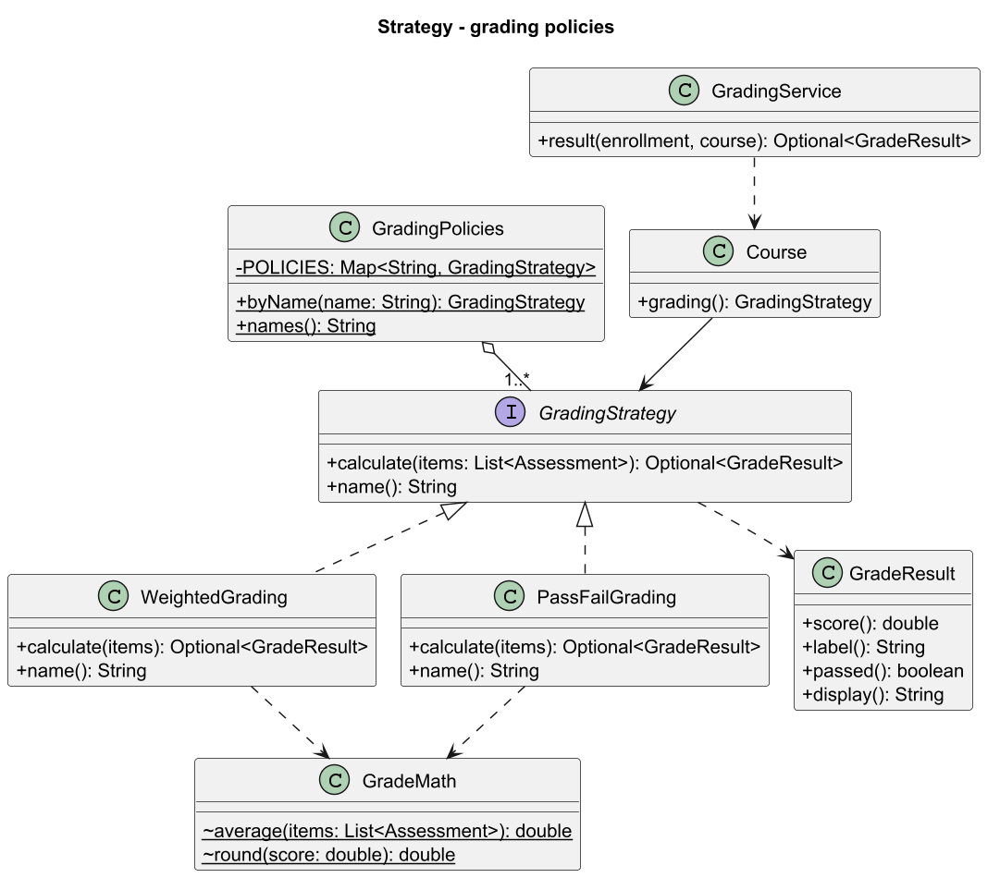
package school;
import java.util.List;
import java.util.Optional;
public interface GradingStrategy {
Optional<GradeResult> calculate(List<Assessment> assessments);
String name();
}package school;
import java.util.List;
import java.util.Optional;
public final class WeightedGrading implements GradingStrategy {
@Override public Optional<GradeResult> calculate(List<Assessment> items) {
if (items.isEmpty()) return Optional.empty();
double score = GradeMath.average(items);
String letter = score >= 90 ? "A" : score >= 80 ? "B" : score >= 70 ? "C" : score >= 60 ? "D" : "F";
return Optional.of(new GradeResult(score, letter));
}
@Override public String name() { return "Weighted letters"; }
}package school;
import java.util.List;
import java.util.Optional;
public final class PassFailGrading implements GradingStrategy {
@Override public Optional<GradeResult> calculate(List<Assessment> items) {
if (items.isEmpty()) return Optional.empty();
double score = GradeMath.average(items);
return Optional.of(new GradeResult(score, score >= 60 ? "PASS" : "FAIL"));
}
@Override public String name() { return "Pass / Fail"; }
}package school;
import java.util.List;
final class GradeMath {
private GradeMath() {}
static double average(List<Assessment> items) {
double maxWeight = items.stream().mapToDouble(Assessment::weight).max().orElseThrow();
double total = 0, weights = 0;
for (Assessment a : items) {
double normalized = a.weight() / maxWeight;
total += a.score() * normalized;
weights += normalized;
}
return total / weights;
}
}In GradeMath every weight is divided by the largest weight before the sum. The proportion between the weights stays the same, and the sum does not become too large when the weights are very big numbers.
The facade takes the strategy from the course and asks it to calculate the result:
public Optional<GradeResult> result(Enrollment enrollment) {
return course(enrollment.courseCode()).grading().calculate(enrollment.assessments());
}In Figure 15 the same gradebook shows "89.2 / B" for a course with letters and "91.0 / PASS" for a pass/fail course. To add a new policy (for example a 5-point scale) we only need one new class that implements GradingStrategy.
After each operation (registration, new course, enrollment, new grade) other parts of the system may need to know about it. In our program this is the activity log. Later it can be a notification for a student or a teacher. The facade should not call each of these parts directly, because then every new receiver changes the facade.
EventBus is the subject. It keeps a list of listeners and has the methods subscribe, unsubscribe and publish. SchoolListener is the observer interface with one method onEvent. ActivityLog is a concrete observer that saves every event. The facade creates a SchoolEvent (type, message, time) after each successful operation and gives it to the bus. The bus sends the event to all listeners. If the operation was rejected, no event is published.
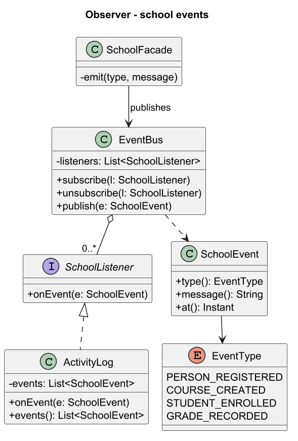
package school;
@FunctionalInterface
public interface SchoolListener { void onEvent(SchoolEvent event); }package school;
import java.time.Instant;
public record SchoolEvent(EventType type, String message, Instant at) {
public SchoolEvent {
java.util.Objects.requireNonNull(type);
java.util.Objects.requireNonNull(at);
message = Validation.text(message, "Event message");
}
}package school;
import java.util.ArrayList;
import java.util.List;
import java.util.Objects;
import java.util.function.Consumer;
public final class EventBus {
private final List<SchoolListener> listeners = new ArrayList<>();
private final Consumer<RuntimeException> onFailure;
public EventBus() { this(e -> System.err.println("Notification failed: " + e.getMessage())); }
public EventBus(Consumer<RuntimeException> onFailure) { this.onFailure = Objects.requireNonNull(onFailure); }
public void subscribe(SchoolListener listener) {
Objects.requireNonNull(listener);
if (!listeners.contains(listener)) listeners.add(listener);
}
public void unsubscribe(SchoolListener listener) { listeners.remove(listener); }
public void publish(SchoolEvent event) {
Objects.requireNonNull(event);
for (SchoolListener listener : List.copyOf(listeners)) {
try { listener.onEvent(event); }
catch (RuntimeException e) {
try { onFailure.accept(e); } catch (RuntimeException ignored) { /* Keep delivering committed events. */ }
}
}
}
}package school;
import java.util.ArrayList;
import java.util.List;
public final class ActivityLog implements SchoolListener {
private final List<SchoolEvent> events = new ArrayList<>();
@Override public void onEvent(SchoolEvent event) { events.add(event); }
public List<SchoolEvent> events() { return List.copyOf(events); }
}Two details of EventBus: the same listener is not added twice, and if one listener throws an exception, the other listeners still receive the event.
The log is subscribed to the bus when the program starts. The facade publishes events through the private method emit.
public static void main(String[] args) {
EventBus events = new EventBus();
ActivityLog log = new ActivityLog();
events.subscribe(log);
SchoolFacade school = new SchoolFacade(events);
DemoData.load(school);
...
}private void emit(EventType type, String message) { events.publish(new SchoolEvent(type, message, clock.instant())); }The menu command "Activity" prints the events saved by the log (Figure 17). Because SchoolListener has only one method, a new listener can also be written as a lambda.
One user action touches many classes. For example, to record a grade the program must check the permission, find the enrollment, check the title of the assessment, save it and publish an event. If the console does all these steps itself, the menu code becomes long, and the same steps must be repeated in tests and in the CSV export.
SchoolFacade gives one simple entry point to the whole subsystem. It has four changing operations (register, addCourse, enroll, recordGrade) and several reading methods (people, courses, enrollments, result). Inside it works with the storage, the creators, the access object, the courses with their strategies and the event bus. The console, the CSV export and the tests call only the facade.

public final class SchoolFacade {
private final SchoolStore store = new SchoolStore();
private final EventBus events;
private final Clock clock;
public SchoolFacade(EventBus events) { this(events, Clock.systemUTC()); }
public SchoolFacade(EventBus events, Clock clock) {
this.events = Objects.requireNonNull(events); this.clock = Objects.requireNonNull(clock);
}
public Person register(Access access, Role role, String id, String name) {
access.require(Permission.MANAGE_PEOPLE);
PersonCreator creator = switch (Objects.requireNonNull(role)) {
case STUDENT -> new StudentCreator(); case TEACHER -> new TeacherCreator();
};
Person person = creator.register(id, name);
if (store.people.containsKey(person.id())) throw new IllegalArgumentException("This person ID already exists");
store.people.put(person.id(), person);
emit(EventType.PERSON_REGISTERED, person.name() + " registered as " + person.role());
return person;
}
public void addCourse(Access access, Course course) {
access.require(Permission.MANAGE_COURSES);
Objects.requireNonNull(course);
if (!(store.people.get(course.teacherId()) instanceof Teacher))
throw new IllegalArgumentException("Select a registered teacher");
if (store.courses.containsKey(course.code())) throw new IllegalArgumentException("This course code already exists");
store.courses.put(course.code(), course);
emit(EventType.COURSE_CREATED, course.code() + " created: " + course.title());
}
public void enroll(Access access, String studentId, String courseCode) {
access.require(Permission.ENROLL);
Course course = course(courseCode);
if (!(store.people.get(studentId) instanceof Student)) throw new IllegalArgumentException("Select a registered student");
var key = new SchoolStore.Key(studentId, courseCode);
if (store.enrollments.containsKey(key)) throw new IllegalArgumentException("Student is already enrolled");
if (enrolledCount(courseCode) >= course.capacity()) throw new IllegalArgumentException("Course is full");
store.enrollments.put(key, new Enrollment(studentId, courseCode));
emit(EventType.STUDENT_ENROLLED, store.people.get(studentId).name() + " enrolled in " + courseCode);
}
public void recordGrade(Access access, String studentId, String courseCode, Assessment assessment) {
access.require(Permission.RECORD_GRADES);
Enrollment enrollment = enrollment(studentId, courseCode);
Objects.requireNonNull(assessment);
if (enrollment.assessments().stream().anyMatch(a -> a.title().equalsIgnoreCase(assessment.title())))
throw new IllegalArgumentException("An assessment with this title already exists for this enrollment");
enrollment.add(assessment);
emit(EventType.GRADE_RECORDED, assessment.title() + ": " + assessment.score() + " for " + store.people.get(studentId).name() + " / " + courseCode);
}Each operation has the same order: permission check, rule checks, saving, event. The reading methods return copies of the lists, so the caller cannot change the data inside the facade.
The menu command for recording a grade only reads the input and makes one call to the facade:
private void recordGrade() {
access.require(Permission.RECORD_GRADES);
String student = input.text("Student ID");
String course = input.text("Course code");
Assessment assessment = new Assessment(input.text("Assessment title"), input.decimal("Score (0-100)"), input.decimal("Weight"));
school.recordGrade(access, student, course, assessment);
System.out.println("Grade recorded.");
}The patterns are not separate examples. They are parts of one flow. The table shows the connections.
| Connection | Description |
|---|---|
| Facade and Factory Method | SchoolFacade.register chooses a creator and gets a Person from it. |
| Facade and Decorator | Every changing operation of the facade starts with access.require(...). The access object is a chain of decorators. |
| Facade and Builder | SchoolFacade.addCourse accepts a Course that was made by Course.Builder. |
| Builder and Strategy | The builder puts a GradingStrategy into the course. The default is WeightedGrading. |
| Facade and Strategy | SchoolFacade.result takes the strategy from the course and calls calculate. |
| Facade and Observer | After each successful operation the facade publishes an event to EventBus, and ActivityLog receives it. |
The next three sequence diagrams show this on real scenarios. Figure 8 shows registration of a student and enrollment (Facade, Decorator, Factory Method, Observer). Figure 9 shows recording of a grade with both cases of the permission check (Facade, Decorator, Observer). Figure 10 shows how the gradebook is calculated (Facade, Strategy).
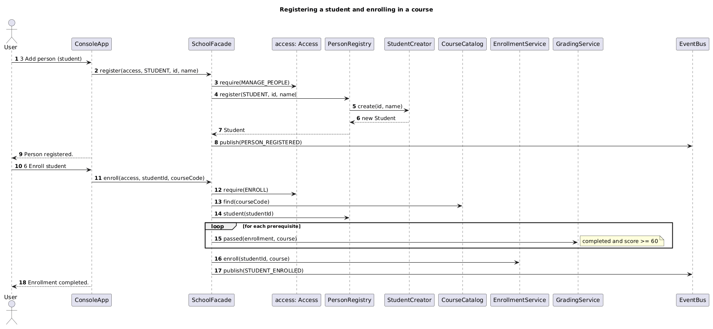

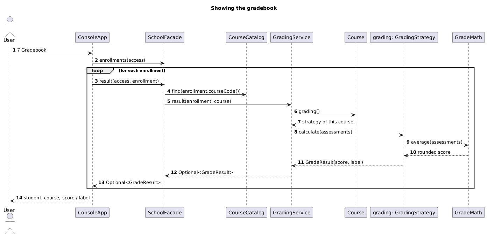
All screenshots in this section were taken from the program running in the Windows console.

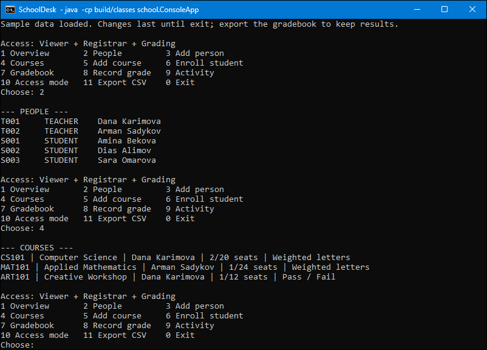
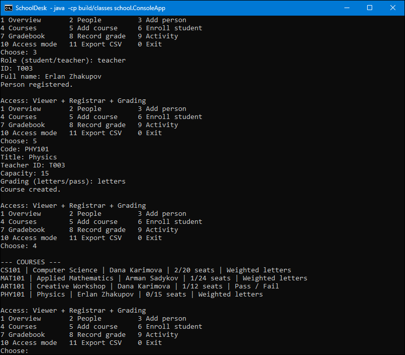
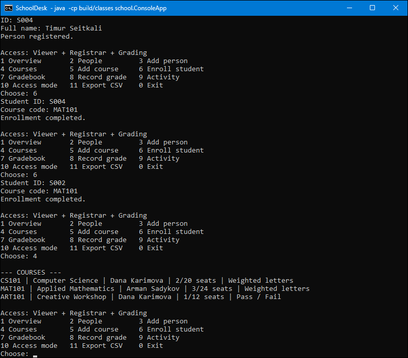
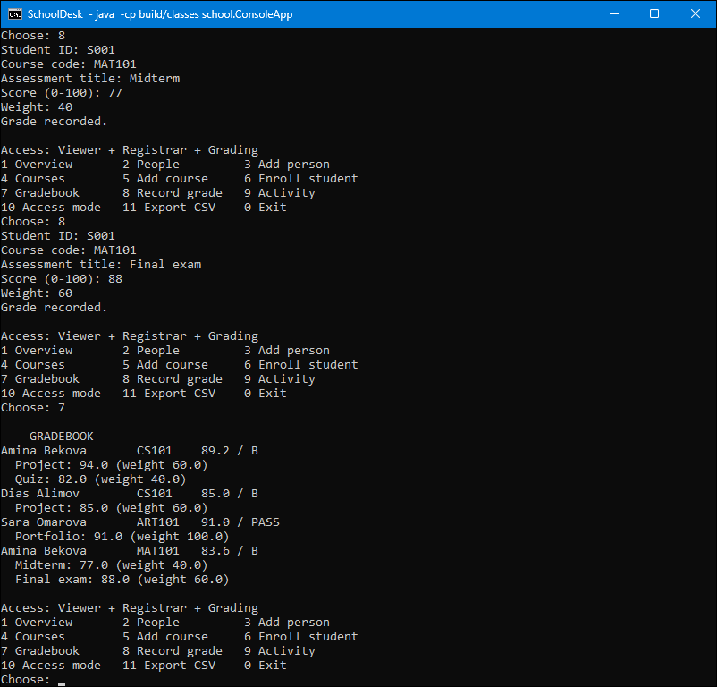
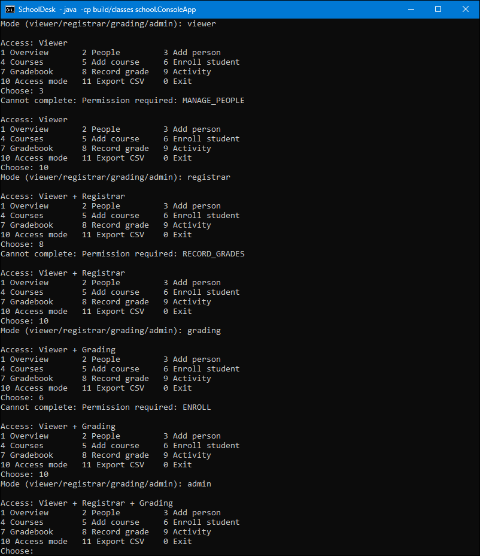
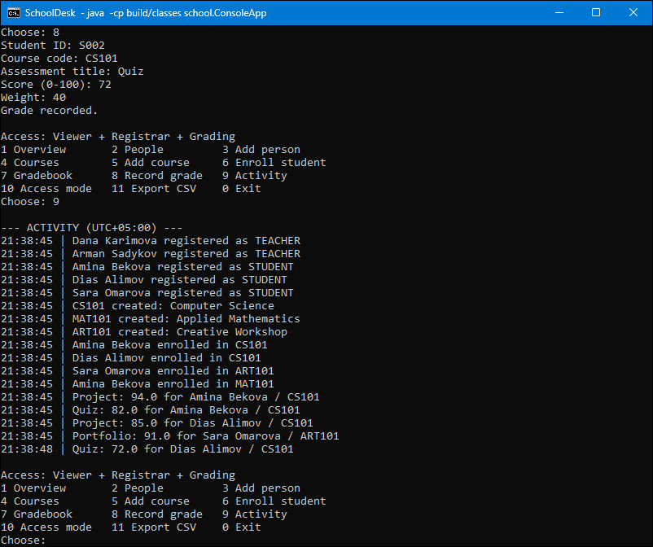
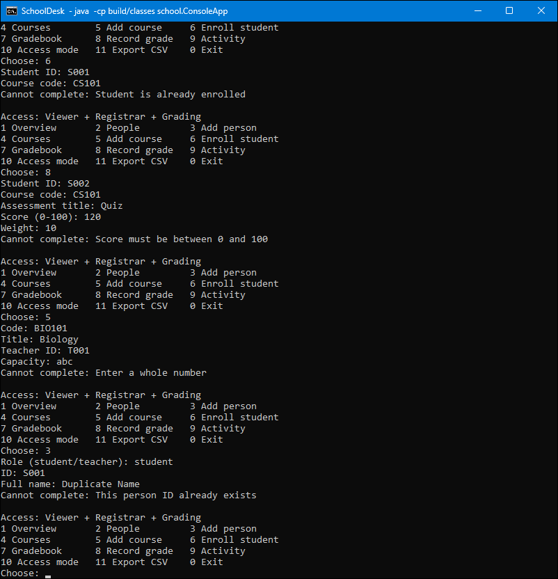
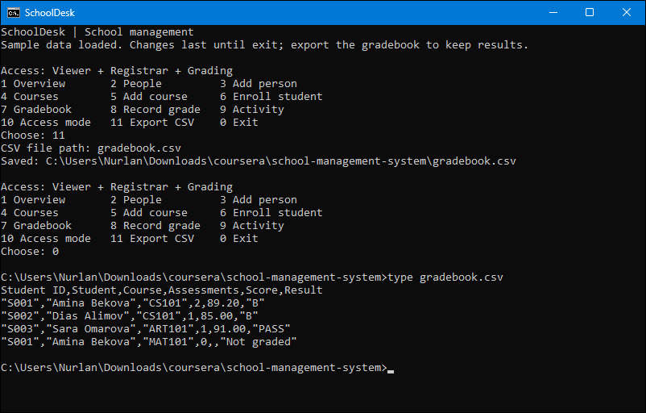
The project has its own small test runner without external libraries. The class Checks has three methods: equal compares two values, close compares two decimal numbers and fails checks that the code throws the expected exception. The class AllTests runs ten groups of tests one after another. If any check fails, the program stops with an error.
| Test group | What is checked |
|---|---|
| ProfileTests | Creators return the right type and role; empty ID or name is rejected; spaces are removed. |
| AccessTests | Permissions of viewer, registrar, grading and admin; require throws an exception without a permission. |
| AssessmentTests | Score below 0 or above 100, wrong weight and empty title are rejected. |
| GradeTests | Weighted average 89.2; borders of the letters (59.99, 60, 70, 80, 90, 100); pass/fail border; empty list gives no result. |
| CourseTests | Default capacity and grading of the builder; course without a teacher or with capacity 0 is rejected. |
| EnrollmentTests | The list of assessments returned to the caller cannot be changed. |
| ObserverTests | A listener is not added twice; unsubscribe works; an error in one listener does not stop the others. |
| SchoolTests | The facade: duplicate IDs, missing permissions, full course, second enrollment, duplicate assessment title, number of published events. |
| ExportTests | Content of the CSV text and of the saved file; quotes in cells. |
| ConsoleTests | A full scenario through the menu: add a student, enroll, record a grade, switch to viewer and get a refusal. |
Result of the command ./build.ps1 -Test:
PASS: 92 checks across 10 test groups
The repository also has a GitHub Actions workflow (.github/workflows/java.yml). After every push it builds the project with JDK 17 and runs the tests.
In this project we built a console school management system and used six design patterns in it: Factory Method, Decorator, Builder, Strategy, Observer and Facade. Each team member implemented two patterns. The patterns are connected in one program: the facade receives every request, checks the decorated access object, uses the creators and the courses made by the builder, calculates results with the strategy of the course and publishes events to the observers.
During the work we saw the practical value of the patterns. With Decorator four access modes are made from three small classes. With Strategy a new grading policy is one new class. With Builder the creation of a course is easy to read. With Facade the console code stays short and the tests use the same operations as the user. The main difficulty was to keep the patterns simple and not to add classes that the program does not need.